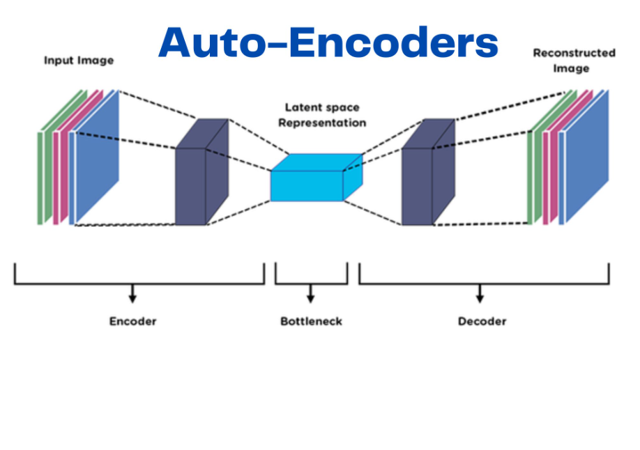

🤖 What is an Autoencoder?
An Autoencoder is an unsupervised artificial neural network used to learn efficient data encodings.
It compresses the input into a lower-dimensional representation (called the bottleneck) and then reconstructs the original input from this compressed form.
🔧 How Autoencoders Work
The network consists of two parts:
- Encoder: Compresses the input data into a smaller latent space.
- Decoder: Reconstructs the original data from the compressed encoding.
The goal is to minimize the difference between the input and the reconstructed output.
📉 Basic Autoencoder Architecture

Simple autoencoder: Encoder compresses input, decoder reconstructs output
🧪 Common Applications
- Dimensionality reduction
- Data denoising
- Anomaly detection
- Image compression and reconstruction
- Generating new data samples (variational autoencoders)
✅ Advantages
- Can learn non-linear dimensionality reduction
- Unsupervised learning (no labels needed)
- Flexible architecture for various data types
⚠️ Limitations
- Requires careful tuning and sufficient data
- May overfit without regularization
- Interpretability of latent space is often difficult